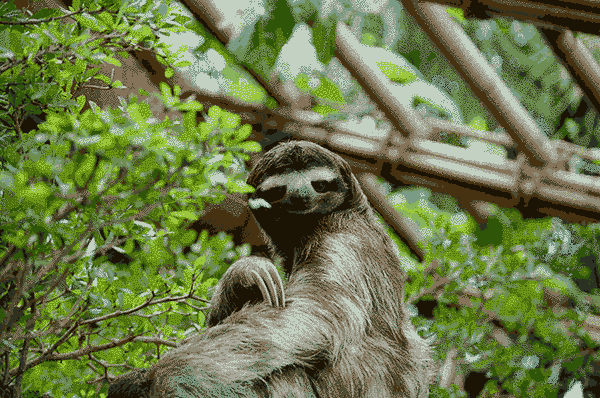
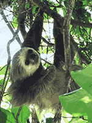

Sloths (/ˈsloʊθ/ sloh-th, /ˈslɒθ/ slo-th) are medium-sized mammals belonging to the families Megalonychidae (two-toed sloth) and Bradypodidae (three-toed sloth), classified into six species. They are part of the order Pilosa and are therefore related to anteaters, which sport a similar set of specialized claws. Extant sloths are arboreal (tree-dwelling) residents of the jungles of Central and South America, and are known for being slow-moving, and hence named "sloths". Extinct sloth species include a few species of aquatic sloths and many ground sloths, some of which attained the size of elephants.
Sloths make a good habitat for other organisms, and a single sloth may be home to moths, beetles, cockroaches, ciliates, fungi, and algae.
The sloth's taxonomic suborder is Folivora, sometimes also called Phyllophaga (Owen, 1842) or Tardigrada (Latham and Davies, 1795). The first two names both mean "leaf-eaters"; derived from Latin and Greek, respectively. Names for the animals used by tribes in Ecuador include ritto, rit, and ridette, mostly forms of the word "sleep", "eat", and "dirty" from Tagaeri tribe of Huaorani.
Sloths are classified as folivores, as the bulk of their diets consist of buds, tender shoots, and leaves, mainly of Cecropia trees. Some two-toed sloths have been documented as eating insects, small reptiles, and birds as a small supplement to their diets. Linnaeus's two-toed sloth has recently been documented eating human faeces from open latrines.[4] They have made extraordinary adaptations to an arboreal browsing lifestyle. Leaves, their main food source, provide very little energy or nutrients, and do not digest easily. Sloths, therefore, have large, specialized, slow-acting stomachs with multiple compartments in which symbiotic bacteria break down the tough leaves. Sloths' tongues have the unique ability to protrude from their mouths 10 to 12 inches, an ability that is useful for collecting leaves just out of reach.[5] As much as two-thirds of a well-fed sloth's body weight consists of the contents of its stomach, and the digestive process can take a month or more to complete.
Since leaves provide little energy, sloths deal with this by a range of economy measures: they have very low metabolic rates (less than half of that expected for a mammal of their size), and maintain low body temperatures when active (30–34°C or 86–93°F), and still lower temperatures when resting.
Although unable to survive outside the tropical rainforests of South and Central America, within that environment sloths are outstandingly successful creatures. On Barro Colorado Island in Panama, sloths have been estimated to comprise 70% of the biomass of arboreal mammals.[6] Four of the six living species are presently rated "least concern"; the maned three-toed sloth (Bradypus torquatus), which inhabits Brazil's dwindling Atlantic Forest, is classified as "endangered", while the island-dwelling pygmy three-toed sloth (B. pygmaeus) is critically endangered.
| Kingdom: | Animalia |
| Phylum: | Chordata |
| Class: | Mammalia |
| Subclass: | Theria |
| Infraclass: | Eutheria |
| Superorder: | Xenarthra |
| Order: | Pilosa |
| Suborder: | Folivora Delsuc, Catzeflis, Stanhope, and Douzery, 2001 |
All content from Wikipedia.